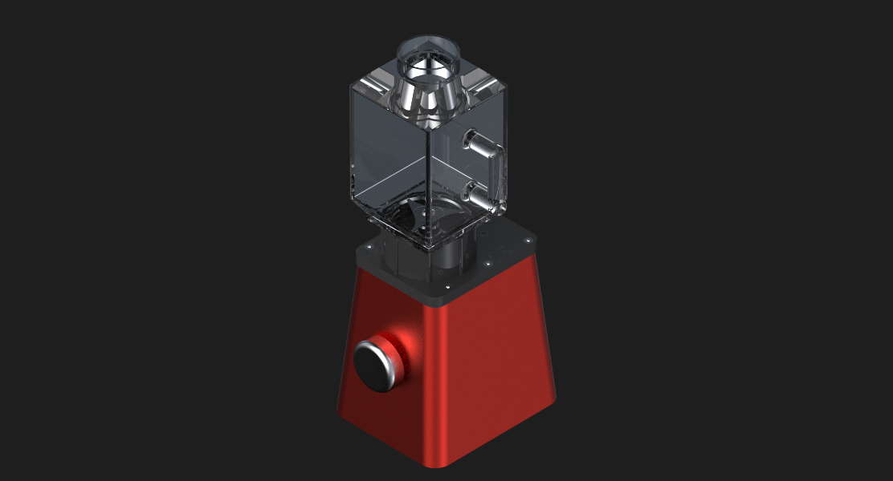

Elbow Air Assembly
A compact elbow air engine enclosed inside a blender base, designed and modeled in Siemens NX with a focus on assembly constraints and interference checks.

A compact elbow air engine enclosed inside a blender base, designed and modeled in Siemens NX with a focus on assembly constraints and interference checks.
The project began with defining envelope constraints and airflow direction. Individual components were modeled parametrically and assembled using mating constraints to ensure proper alignment and motion.